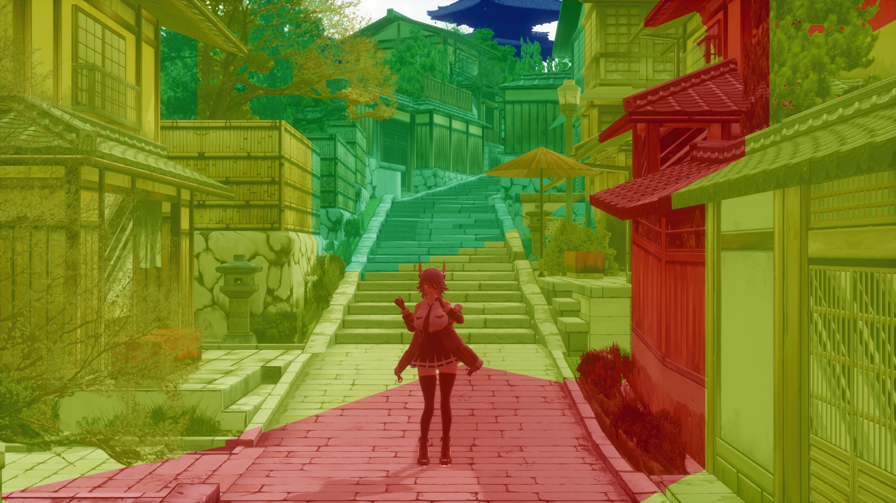
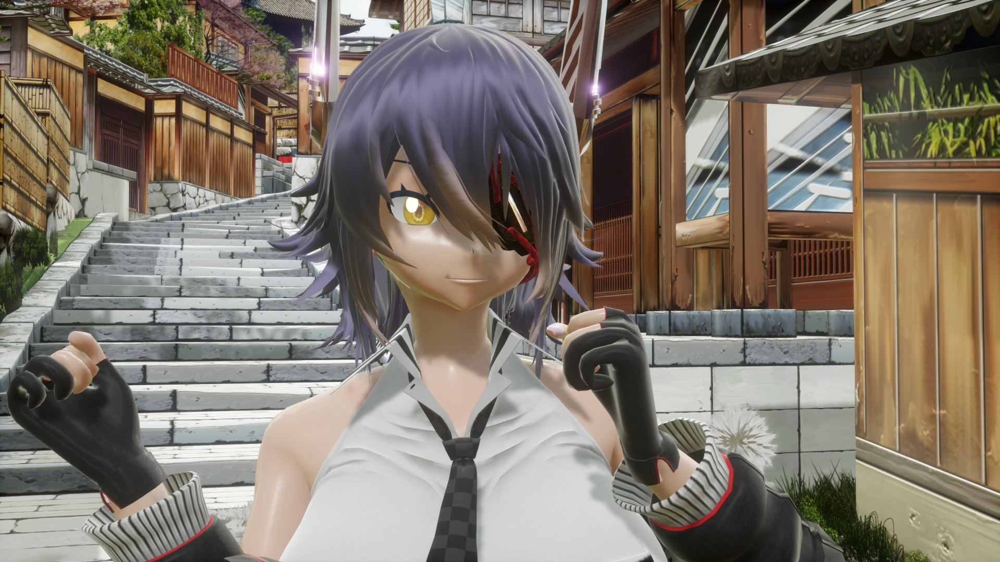
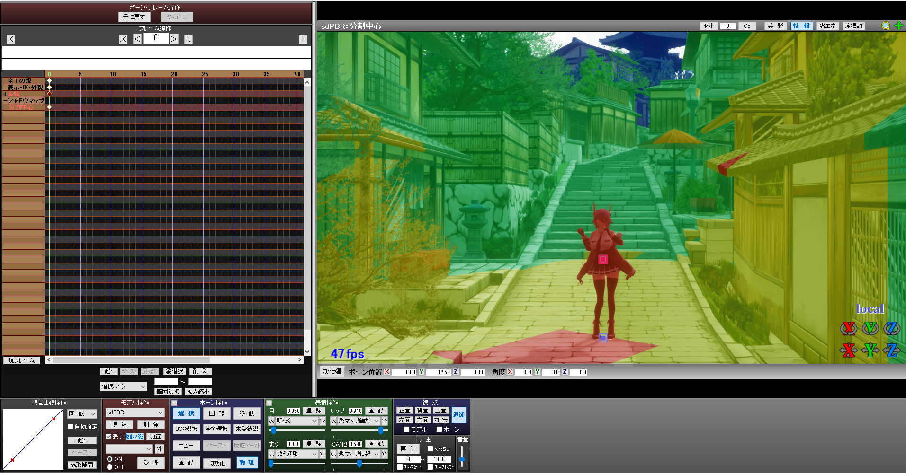

Starting with version 3.40, the shadow map for shadow rendering has been completely overhauled and the shadow map code has been significantly refined. This allows you to create more beautiful shadows than before, but by default, not only will they not look much different, but in some cases, they may even look worse than before. That's why I've put together a tutorial to precisely adjust shadows to make them more beautiful.
However, since most of the topic is about the shadows of directional light, you don't need to read it if you only use additional lights and skyboxes as light sources. Shadow maps for directional light are really hard to create properly because they cover a large area.
You can tinker with the quality of the shadow map using the included sdPBRconfig.exe. The following are the options related to the shadow map quality. The lower the option you choose in the dropdown, the higher the quality and slower the performance. If you've already played around with sdPBR to some extent and have a general idea, you can skip this part.
| Parallel shadow map cascades | Directional lights specified in MMD lighting settings can illuminate an extremely wide area, such as the entire stage, so you can create shadows over a wide area by separating the shadow maps responsible for narrow and wide areas. Details will be given later. |
| Parallel light shadow map filter | When finalizing the shadow map, sdPBR blurs it so that it doesn't become blocky. This is the maximum blur range on the screen at that time. If you increase ShadowMapBlur morph in sdPBR.pmx, increasing this value as well may help achieve the intended blur effect. |
| Size of shadow maps | Specifies the resolution of the shadow map. The magnification is based on the resolution of the output screen. If you select 4x when outputting to 4K, a 16Kx16K shadow map will be created. Even as the author, I wonder if it's possible to make something like that. In any case, this is very important for determining the shadow quality, and the effect is easy to see, but it comes with a noticeable performance cost. If it crashes when rendering, check if you have set it too high. |
Personally, I think it would be fine to use 松(better) setting in general, and only double the size of the shadow map for finalization if you have enough video memory. For 4K output, you might actually want to reduce the size of the shadow map to see if MMD crashes.
Now, here comes the main topic. The previous method works regardless of the scene you want to make, so it will usually improve the quality. But you can improve the quality even further, or get the same quality with a lighter setting by adjusting it to suit the scene.
 
Tenryu-chan by (｀・ω・), background by Mumumu.
First, there are now more tools useful for adjusting shadows. Increasing the IlluminanceMeter morph (shadow map info, the bottom one) in the bottom right of the facial manipulation panel in sdPBR.pmx will reveal information about the shadow map.
The screen will be color-coded. Unlike MMD's standard self-shadow shadow maps, sdPBR's shadow maps have up to four layers, with each layer consisting of one shadow map. All four shadow maps have the same resolution, but some are narrower than others. For this reason, a narrow shadow map is for casting fine shadows close to the camera, and a wide shadow map casts a rough shadows far from the camera.
Color coding shows which shadow map are responsible for each colored area. red: narrowest, yellow: somewhat narrow, green: somewhat wide, blue: widest shadow map. Note that areas that are not in any shadow maps won't be shaded and are displayed in white.
So, if you keep the main model within the red area, the results will generally be good. Depending on the motion, it might sometimes go out of the red area, so you should make the red area a little wider. By default it is wide enough to cover the most dance motion & model combination so that the entire body will not protrude, so there is a lot of waste. The wasted space means that the shadow map is wider than necessary and ends up producing rough shadows.
So first, place the center of the red area around the torso of the main model (or the center of the face if you want to take a close up shot of the face). This can be controlled with the bone called ShadowMap - ShadowMapCenter in sdPBR.pmx. Next, narrow the red area by increasing ShadowMapDetail morph in the facial manipulation panel.

Can you see how the shadows have become sharper and even the shape of Tenryu-chan's bangs is clearly reflected in the shadows?
Once you've scaled the red area to fit the entire main model, play the dance motion you want to use and see how it looks. The shadow blockiness and other issues should have been reduced compared to before. Actually, unless the model's face sticks out during the close up, it is fine if the model goes slightly out from the red area during the dance.
This is great news, because the shadows will look more beautiful without any extra GPU power or memory, and buying a new PC or graphics card might become unnecessary, hooray!
By the way, you might think "Shouldn't using model body etc. as the outside parent of ShadowMapCenter bone work?", but I don't really recommend doing that. As you can easily see by trying that, when you move ShadowMapCenter bone, the shadow outline will become jittery, which does not look good.
ShadowMapBlur morphs can also be used to easily tune shadows. When the morph value is low, the shadow becomes blocky, and as the value increases, it becomes more and more blurred. If you specify a large value for this morph, it is recommended to increase Parallel light shadow map filter in sdPBRconfig as well. Increasing this value may help achieve the intended blur effect (it'll become a little heavier). However, if you increase ShadowMapBlur, noise will easily appear, so you should increase ShadowMapOffset morph as well.
ShadowMapOffset morph is used to suppress noise coming from shadow maps. When increased, it will no longer cast shadows if the shaded object is close to the shadow caster, like the hair shadow, so if you don't like shadows casting on the face, you can easily adjust those areas.
Now, let's talk about ShadowMapWide & LightHeight morphs I haven't mentioned yet. ShadowMapWide morph specifies the size of the blue area in the shadow map info, which is the largest area. The larger the morph value, the larger the blue area, which in turn expands the green and yellow areas, but the red area remains the same. If you want to reduce the shadow artifacts in distant places, you can adjust this morph to make the blue area fit the entire area you want to cast shadows. For LightHeight (directional light height), you can think of it as the maximum height of the building you want it to cast shadows. If you make it way too high, there will be problems with the accuracy of the floating point calculation, so as long as the white area in the shadow map info is not noticeable, you should keep it as small as possible so that it can accurately cast fine shadows.
There may be situations where a character wearing a hat has their face obscured by the hat's shadow, or where the shadow of their bangs falls across their face, but it can be a hassle to make fine adjustments. You might want to eliminate only the shadow of their hair to make the most of the model's painted shadows. If that's the case, you should check the sdPBR_SD0-SD3 tabs in the MMEffect dialog.
The four tabs, sdPBR_SD0-SD3, contain effects to create a shadow map of directional light. If you uncheck the object that casts the shadow, the shadow will not be cast from that object. For example, if you uncheck Tenryu-chan's bangs from the sdPBR_SD0 tab,
as you can see, only the shadow of the bangs disappears. It depends on the structure of the model, but there are many different shadows that can be cast from many different objects, so I think it's a good idea to try out various things. By the way, sdPBR_SD0 creates a shadow in the finest red area, and SD1 corresponds to yellow, SD2 corresponds to green, and SD3 corresponds to blue, so if you decide to remove shadow, I think it's better to uncheck all four tabs, even though it's tedious.
So far, the main focus was about excluding the shadow caster, but you may wonder if you can adjust the shadow receiver. This is done by adjusting the shadowVisibility parameter of the material. Please read How to make materials for the method. To adjust the shadow intensity for all objects at once, you can use ShadowDensity morph in sdPBR.pmx or additional lights.
If you don't like dark shadows on the face, it might be a good idea to use a material with low shadowVisibility for the face. However, this is not available by default as it can make it look like there is a gap between the neck and face. I think you can use it if the model has a scarf or something around their neck. Tinkering with this parameter will likely make it physically incorrect, but real hair is somewhat more transmissive and sparser than polygonal hair, so intentionally lowering shadowVisibility to lighten the hair shadow might make it more realistic. Of course, that depends because it also lightens the shadows cast from buildings and other objects.
Due to the way shadow maps work, it's not possible to cast colored and transparent shadows like stained glass. If you really want to render the shadow from a stained glass shape or color, you can use a light IES profile instead of tweaking shadows. It seems that a special shadow map such as a deep opacity map can be used to approximate it to some extent, but I think it's basically impossible to implement it on a light like a direct light, which can cast shadows over a wide area, given the amount of memory and performance cost.
{kind=link}
{kind=link}
{kind=link}
{kind=link}
{kind=link}